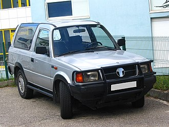

History TATA motor
TATA Motor

Tata Motors was founded in 1945, as a locomotive manufacturer. Tata Group entered the commercial vehicle sector in 1954 after forming a joint venture with Daimler-Benz of Germany in which Tata developed a manufacturing facility in Jamshedpur for Daimler lorries.[11] By the November of 1954 Tata and Daimler manufactured their first goods carrier chassis at their Jamshedpur plant with 90-100 hp and capacity of 3-5 tons.After years of dominating the commercial vehicle market in India, Tata Motors entered the passenger vehicle market in 1991 by launching the Tata Sierra, a sport utility vehicle based on the Tata Mobile platform. Tata subsequently launched the Tata Estate (1992; a station wagon design based on the earlier Tata Mobile), the Tata Sumo (1994, a 5-door SUV) and the Tata Safari (1998).
Tata launched the Indica in 1998. A newer version of the car, named Indica V2, later appeared. Tata Motors also exported cars to South Africa. In the 2000s, Tata Motors made a series of acquisitions and partnerships, acquiring Daewoo's South Korea-based truck manufacturing unit, a joint venture with the Brazil-based Marcopolo, Tata Marcopolo Bus,Jaguar Land Rover.,Hispano Carrocera, and an 80% stake in the Italian design and engineering company Trilix.
Tata Motors Cars
Tata Sierra (1991-2000)
Tata Motors Cars is a division of Tata Motors which produces passenger cars under the Tata Motors hood. Tata Motors is among the top five passenger vehicle brands in India with products in the compact, midsize car, and utility vehicle segments.[22] The company's manufacturing base in India is spread across Jamshedpur (Jharkhand), Pune (Maharashtra), Lucknow (Uttar Pradesh), Pantnagar (Uttarakhand), Dharwad (Karnataka) and Sanand (Gujarat). Tata's dealership, sales, service, and spare parts network comprise over 3,500 touchpoints.[22] Tata Motors has more than 250 dealerships in more than 195 cities across 27 states and four Union Territories of India.[23] It has the third-largest sales and service network after Maruti Suzuki and Hyundai.
Tata also has franchisee/joint venture assembly operations in Kenya, Bangladesh, Ukraine, Russia, and Senegal.[24] Tata has dealerships in 26 countries across 4 continents.[25] Tata is present in many countries, it has managed to create a large consumer base in the Indian subcontinent, namely India, Bangladesh, Bhutan, Sri Lanka and Nepal. Tata is also present in Italy,[26] Spain,[27] Poland,[28] Romania,[29] Turkey,[30] Chile,[31] South Africa,[32] Oman, Kuwait, Qatar, Saudi Arabia, United Arab Emirates, Bahrain, Iraq, Syria and Australia.
Tata Daewoo
Tata Daewoo (officially Tata Daewoo Commercial Vehicle Company and formerly Daewoo Commercial Vehicle Company) is a commercial vehicle manufacturer headquartered in Gunsan, Jeollabuk-do South Korea, and a wholly owned subsidiary of Tata Motors. It is the second-largest heavy commercial vehicle manufacturer in South Korea and was acquired by Tata Motors in 2004. The principal reasons behind the acquisition were to reduce Tata's dependence on the Indian commercial vehicle market (which was responsible for around 94% of its sales in the MHCV segment and around 84% in the light commercial vehicle segment) and expand its product portfolio by leveraging on Daewoo's strengths in the heavy-tonnage sector.
Tata Motors has jointly worked with Tata Daewoo to develop trucks such as Novus and World Truck and buses including GloBus and StarBus. In 2012, Tata began developing a new line to manufacture competitive and fuel-efficient commercial vehicles to face the competition posed by the entry of international brands such as Mercedes-Benz, Volvo, and Navistar into the Indian market.
Tata Hispano
Tata Hispano Motors Carrocera, S.A. was a bus and coach manufacturer based in Zaragoza, Aragon, Spain, and a wholly owned subsidiary of Tata Motors. Tata Hispano has plants in Zaragoza, Spain, and Casablanca, Morocco. Tata Motors first acquired a 21% stake in Hispano Carrocera SA in 2005,[34] and purchased the remaining 79% for an undisclosed sum in 2009, making it a fully owned subsidiary, subsequently renamed Tata Hispano. In 2013, Tata Hispano ceased production at its Zaragoza plant.[35]
Jaguar Land Rover
Jaguar Land Rover PLC is a premium British automaker headquartered in Whitley, Coventry, United Kingdom, and has been a wholly owned subsidiary of Tata Motors since June 2008, when it was acquired from Ford Motor Company of USA.[36] Its principal activity is the development, manufacture and sale of Jaguar luxury and sports cars and Land Rover premium four-wheel-drive vehicles.
Jaguar Land Rover has two design centres and three assembly plants in the United Kingdom. Under Tata ownership, Jaguar Land Rover has launched new vehicles including the Range Rover Evoque, Jaguar F-Type, the Jaguar XE, the Jaguar XJ (X351), the second-generation Range Rover Sport, and Jaguar XF, the fourth-generation Land Rover Discovery, Range Rover Velar and the Range Rover (L405).
JD Power, of the US, rates Land Rover and Jaguar as the two worst brands for initial quality. [37] The Jaguar F-Pace made Consumer Reports February 2019 list of the 10 Least Reliable Cars. The editors cited "electronics, drive system, power equipment, noises and leaks" as problematic aspects.[38] The Jaguar Land Rover subsidiary was struggling by 2019 and Tata Motors wrote down its investment in JLR by $3.9 billion. Much of the financial problem was due to a 50% drop in sales in China during 2019, although the situation was improving. Still, Tata was open to considering a partnership with another company according to a statement in mid-October, as long as the partnership agreement would allow Tata to maintain control of the business. The company ruled out the possibility of a sale of JLR to another entity.
In July 2023, Tata announced the its plans to build an electric car battery factory in the UK, which will be one of the largest of its kind in Europe.[40][41] Located in Bridgwater, Somerset, the factory will supply Jaguar Land Rover's future battery electric models, including the Range Rover, Defender, Discovery and Jaguar brands, with the potential to also supply other car manufacturers.[42] Production at the new facility is due to start in 2026.